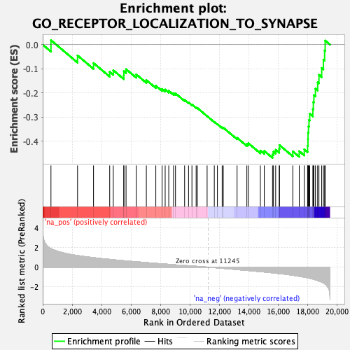

| | | Dataset | Recurrence |
| Phenotype | NoPhenotypeAvailable |
| Upregulated in class | na_neg |
| GeneSet | GO_RECEPTOR_LOCALIZATION_TO_SYNAPSE |
| Enrichment Score (ES) | -0.46840823 |
| Normalized Enrichment Score (NES) | -2.043373 |
| Nominal p-value | 0.0 |
| FDR q-value | 0.116428696 |
| FWER p-Value | 0.518 |
Table: GSEA Results Summary

Fig 1: Enrichment plot: GO_RECEPTOR_LOCALIZATION_TO_SYNAPSE
Profile of the Running ES Score & Positions of GeneSet Members on the Rank Ordered List
| SYMBOL | RANK IN GENE LIST | RANK METRIC SCORE | RUNNING ES | CORE ENRICHMENT | | 1 | GHSR | 561 | 1.877 | 0.0184 | No |
| 2 | CACNG7 | 2368 | 1.179 | -0.0447 | No |
| 3 | SCRIB | 3454 | 0.965 | -0.0761 | No |
| 4 | CACNG3 | 4553 | 0.793 | -0.1125 | No |
| 5 | STX7 | 4795 | 0.756 | -0.1059 | No |
| 6 | DLG2 | 5511 | 0.655 | -0.1261 | No |
| 7 | SNAP47 | 5516 | 0.655 | -0.1098 | No |
| 8 | GPC4 | 5664 | 0.635 | -0.1014 | No |
| 9 | RAB11A | 6354 | 0.550 | -0.1229 | No |
| 10 | TYROBP | 7043 | 0.464 | -0.1466 | No |
| 11 | NETO1 | 7686 | 0.389 | -0.1698 | No |
| 12 | LGI1 | 8114 | 0.340 | -0.1831 | No |
| 13 | KIF17 | 8322 | 0.318 | -0.1858 | No |
| 14 | NSG1 | 8565 | 0.295 | -0.1908 | No |
| 15 | NPTN | 8891 | 0.260 | -0.2009 | No |
| 16 | CACNG8 | 9023 | 0.245 | -0.2015 | No |
| 17 | VPS35 | 9644 | 0.175 | -0.2289 | No |
| 18 | SHISA6 | 9911 | 0.149 | -0.2388 | No |
| 19 | MAPK10 | 10141 | 0.123 | -0.2475 | No |
| 20 | CACNG5 | 10426 | 0.092 | -0.2598 | No |
| 21 | ADAM10 | 10506 | 0.084 | -0.2617 | No |
| 22 | DLG4 | 11172 | 0.009 | -0.2956 | No |
| 23 | GRIPAP1 | 11660 | -0.045 | -0.3195 | No |
| 24 | RAP1A | 11871 | -0.072 | -0.3285 | No |
| 25 | GPHN | 12195 | -0.110 | -0.3423 | No |
| 26 | ZDHHC3 | 12269 | -0.120 | -0.3431 | No |
| 27 | KIF5A | 13207 | -0.238 | -0.3852 | No |
| 28 | NLGN1 | 13872 | -0.327 | -0.4111 | No |
| 29 | DAG1 | 13975 | -0.340 | -0.4078 | No |
| 30 | LRRC7 | 14789 | -0.448 | -0.4382 | No |
| 31 | IQSEC2 | 15056 | -0.487 | -0.4396 | No |
| 32 | RAB8A | 15617 | -0.574 | -0.4539 | Yes |
| 33 | CACNG4 | 15680 | -0.585 | -0.4424 | Yes |
| 34 | GRIP1 | 15831 | -0.606 | -0.4349 | Yes |
| 35 | CNIH2 | 16070 | -0.644 | -0.4309 | Yes |
| 36 | GRIP2 | 16092 | -0.647 | -0.4157 | Yes |
| 37 | RELN | 16995 | -0.817 | -0.4414 | Yes |
| 38 | CEP112 | 17432 | -0.920 | -0.4406 | Yes |
| 39 | SNAP25 | 17774 | -1.005 | -0.4329 | Yes |
| 40 | ARHGAP44 | 17999 | -1.078 | -0.4172 | Yes |
| 41 | DLG3 | 18023 | -1.086 | -0.3911 | Yes |
| 42 | CLSTN1 | 18030 | -1.090 | -0.3639 | Yes |
| 43 | STX3 | 18062 | -1.095 | -0.3380 | Yes |
| 44 | KIF5B | 18095 | -1.107 | -0.3117 | Yes |
| 45 | CACNG2 | 18143 | -1.122 | -0.2859 | Yes |
| 46 | HRAS | 18357 | -1.197 | -0.2667 | Yes |
| 47 | STX1B | 18390 | -1.211 | -0.2378 | Yes |
| 48 | KIF5C | 18428 | -1.227 | -0.2089 | Yes |
| 49 | GPC6 | 18534 | -1.278 | -0.1821 | Yes |
| 50 | ANKS1B | 18683 | -1.352 | -0.1557 | Yes |
| 51 | ADAM22 | 18771 | -1.402 | -0.1248 | Yes |
| 52 | CPLX1 | 18957 | -1.507 | -0.0964 | Yes |
| 53 | DLG1 | 19073 | -1.590 | -0.0623 | Yes |
| 54 | DBN1 | 19156 | -1.676 | -0.0243 | Yes |
| 55 | PRKCZ | 19194 | -1.714 | 0.0169 | Yes |
Table: GSEA details [plain text format]
Fig 2: GO_RECEPTOR_LOCALIZATION_TO_SYNAPSE: Random ES distribution
Gene set null distribution of ES for GO_RECEPTOR_LOCALIZATION_TO_SYNAPSE